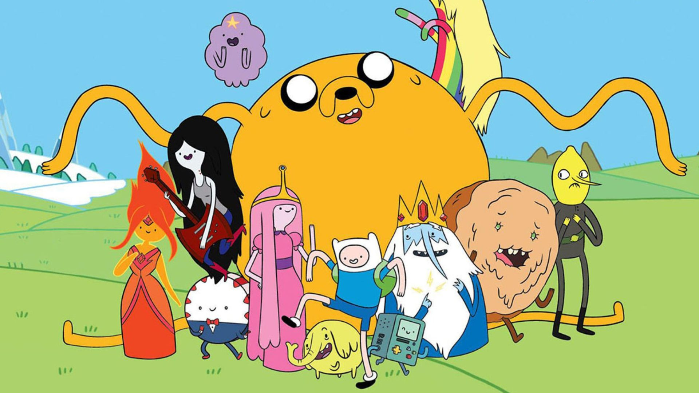
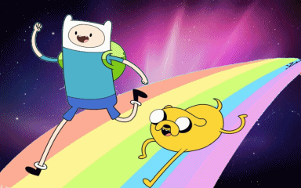

PÁGINA INICIAL
PERSONAGENS
QUIZ AVENTUREIRO
PROVE QUE VOCÊ É FÃ RESPODENDO O QUIZ

RESPONDA
Em qual terra se passa a história?
Jake nasceu da onde?
da mãe dele
do pai
da semente
Qual é a cor que Finn está vendo ao pegar a pedra?
azul
verde
vermelho
************************ OBRIGADA POR PARTICIPAR********************
